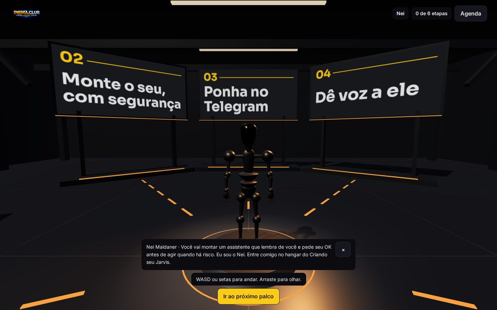

Fonte e briefing
Na sessão com Claude Code, Nei partiu dos materiais de “Criando seu Jarvis” e definiu o que aconteceria em cada palco. Ao concluir uma etapa, você veria uma peça encaixar no robô.
Ver a página de cursos · Ler o briefingAcompanhe cada pedido feito ao Codex, leia a resposta e veja o que precisou mudar no hangar.
Entrar no evento
O custo equivalente serve para comparação com os preços da API. O uso foi pela assinatura, sem cobrança por API.
Carregando os registros…
Na sessão com Claude Code, Nei partiu dos materiais de “Criando seu Jarvis” e definiu o que aconteceria em cada palco. Ao concluir uma etapa, você veria uma peça encaixar no robô.
Ver a página de cursos · Ler o briefingCompare a vista de quem entra no hangar. Abra uma captura para ver os detalhes.
Qual parte do seu curso ganharia sentido se a pessoa pudesse montá-la com as próprias mãos?
os cursos e guias estão grátis no inema.club, direto na internet